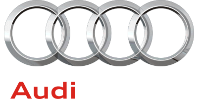

Uzmanlık Alanlarımız
Şanzıman tipi ve marka fark etmez
Dört farklı şanzıman teknolojisinde ve yedi marka grubunda uzman ekip ve doğru ekipmanla hizmet veriyoruz.
Çift Kavramalı
DCT
Hızlı vites geçişi sağlayan çift kavramalı şanzımanlarda mekatronik ve kavrama seti onarımı.
Sürekli Değişken
CVT
Kayış/zincir sistemli sürekli değişken şanzımanlarda bakım, arıza tespiti ve revizyon.
Audi Çift Kavrama
S-Tronic
Audi'ye özel S-Tronic şanzımanlarda yağ/filtre bakımı ve mekatronik yenileme.
VAG Grubu Çift Kavrama
DSG
Volkswagen, Audi, Seat, Škoda ve Cupra DSG şanzımanlarında komple onarım ve revizyon.
Uzman Olduğumuz Marka Grupları

Mercedes-BenzOtomatik şanzıman tamiri




OpelOtomatik / CVT şanzıman tamiri